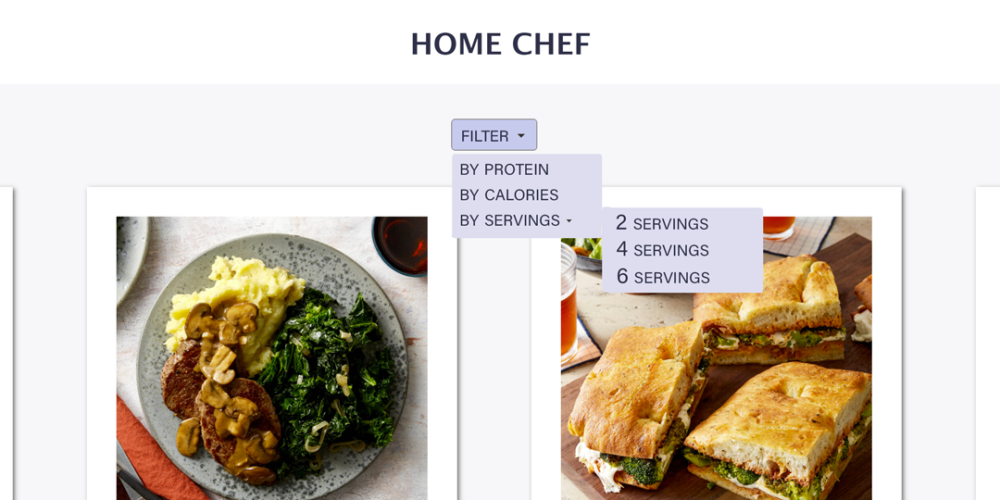

For this assignment, I want to recreate a multitiered menu. I want to implement this dropdown menu to my recipe site at btudesign.com/idm232_bkt44. for the filter.

Currently its static with a bunch of buttons and takes up lots of space. With the new drop down it will reduce the amount of space it takes up and allow more options for filters
I will be attempting to use this dropdown menu as a base for my filter. The example code can be found below from the W3School's site.